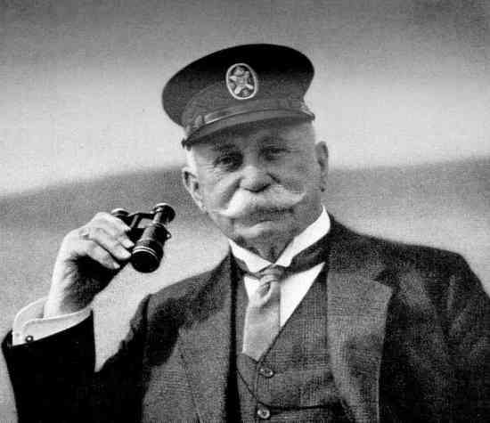

What is an Airship? An Airship, is any aircraft that uses buoyancy to keep itself up in the air, such as Hot Air Balloons, and Blimps.
The Hindenburg was classified as a Dirigible Airship, or a Rigid Airship, which means that it had a metal frame and was filled with large chambers of a “lighter-than-air” gas. More specifically, the Hindenburg was a special type of Dirigible known as a Zeppelin, or an aircraft designed and built by the Zeppelin Company of Germany, which derives its name from its creator and owner, Count Ferdinand von Zeppelin. Chartered in 1936, the Hindenburg was named after the former President of Germany, and was designed to be the luxury class of airships, ferrying passengers across the Atlantic from Berlin, to New York and New Jersey, and even Brazil. A little known fact of the Hindenburg today is that it was running during Nazi control of Germany, and was intended to be used when the second World War came around. This is why on one side of the aircraft, the Nazi symbols are visible. At one point in time, Hitler and his administration tried to get the name of the airship changed to “the Hitler,” but the Zeppelin company promptly refused. The most traveled path that the Hindenburg took was from Berlin to Lakehurst, New Jersey which was considered (and still is) the “airship capital of the world.” The public began to become obsessed with these rigid airlines and the Hindenburg, and they became the standard for travel at the time. However, the Hindenburg crash in 1937 in Lakehurst led to the public's distrust of the airships, replaced by what seemed to be safer airplanes for quick transportation, and boats or ships for luxury travel. The crash was a dramatic moment for everyone in the nation, especially those listening to the radio who most likely heard the infamous phrase “Oh, the humanity!” which came from a reporter at the scene who was shocked by the incident. Despite the national attention it received, only 35 of the 97 passengers were killed.
